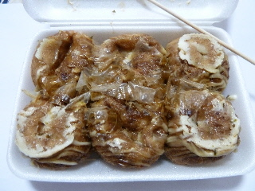
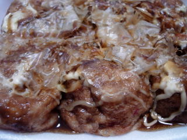

ラピタ本店のたこ焼きを買いました。
2013/06/03
6個入りのタコ焼きです。

夕方安売りになっていました。
冷えて固くなっていたので、帰ってからレンジでチンしていただきました。
たこ焼きはアツアツを食べるのが一番です。
島根県出雲市今市町87
2013/06/03
6個入りのタコ焼きです。

夕方安売りになっていました。
冷えて固くなっていたので、帰ってからレンジでチンしていただきました。
たこ焼きはアツアツを食べるのが一番です。
2010/8/11
たこ焼きは熱々で食べるのが一番ですね。
時間を置いてしまったので、ちょっと固くなったしまいました。6個入りのタコ焼きです。

レンジでチンすればよかったかな？
次は買ってすぐ食べるか、温めるかして、美味しく食べようって思いました。
2009/9/12
ラピタのたこ焼き屋さんが新しくなって1年たったんですね。
今1週年記念で、280円のたこ焼きが250円で販売していたので買って食べました。
300円以下のたこ焼きって安くていいですね。
ちょっと大きめのたこ焼き6個入りで、よくあるサイズなので、とても割安感がありますね。
2008/8/23
ラピタ本店で、たこ焼き、大判焼きのブースが今日オープンしていました。
いままで、よそのお店（サザエでしたっけ？）が入ってたところが、直営になったみたいです。
オープンしたばっかりで、お店の人も不慣れな感じがしていたので、あまり味に期待はせずに、どんなもんでしょう？って思いながら食べたんですが、これが意外と美味しかったです。
たこ焼きの中がトロトロで、今時な感じのたこ焼きでした。トロトロ具合が、柔らか過ぎず、たこ焼き自体の味もしっかりあり、好きなタイプでした。